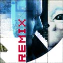
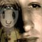

Remix // Cuttin' it up for noise and triple j, the REMIX project sets the record straight for those unsure of the validity of the artform itself - simple song re-invention or superior musical understanding? Check out some examples by reading the feature below - containing more about the project and expert comments and tips by Andrew from Lino. |
|
|
|
 |
feature //
|

| | AUSSIE KIDS ARE REMIX KIDS
by // Matt Blackman
Andrew Lancaster and his Sydney pop outfit Lino are but one of twelve artists who presented their tracks to this noise project for remixing, where, via triple j radio, we invited bedroom bangers Australia-wide to ...read more |
more features |
|
|
|
creative people //
|
| | Allen Kedea
I'm from Brizzy and I love to DJ, remix, and produce music!...read more |
|

| | joshua salmon
I like to create strange flash animations that are vague and not ...read more |
|
| | Andrew Perry
Otherwise known as the artist 'Pan sapiens'.
I try to determine ...read more |
more people |
|
| | highlights and links //
Quick Guide
For background on the October 2001 festival go to About. To check out the 25+ plus online projects, take a look out our Projects page. To find out what else was went on in noise, take a look at our Festival Guide. |
Even more noise
Audio Digital? Take a look/listen at our fabulous Fatboy Slim Remix finalists. Web more your thing? Get lost in the world of DIY websites. Whats on the radio? Check out the ABC Radioand SBS pages here at noise. |
Wanna make some noise?
It's not to late to enter the noise festival. Check out the True Tales of Love and Hate zine project. Open now to all young Australian creatives. Click here for all the info. |
|
|
|
|